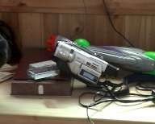
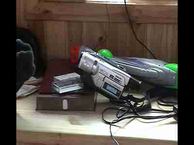

Archive: Restored Truths
No filters. No fakes. Just clean, honest revivals.
Packages
| Package | Quality | Price | Details |
|---|---|---|---|
| Legacy | 720p ProRes | $5-15 | Raw deinterlace. For pros. |
| Ultimate | 1080p | $20-50 | Hand-trimmed + upscale. |
| UHD | 4K | Request | Premium processing. |
Countryside Project
Same footage across three packages.
Legacy (720p)
Ultimate (1080p)
UHD (4K)
Frame Comparisons
Building
Camera


Dog
Diving Project (2001)
Full Movie (720p)
UHD Short